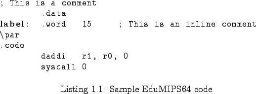

Next: The .data section Up: Source files format Previous: Source files format Contents
To distinguish the various parts of each source code line, any combination of spaces and tabs can be used, as the parser ignores multiple spaces and only detects whitespaces to separate tokens.

Comments can be specified using the ``;'' character, everything that follows that character will be ignored. So a comment can be used ``inline'' (after the directive) or on a row by itself.
Labels can be used in the code to reference a memory cell or an instruction. They are case insensitive. Only a label for each source code line can be used. The label can be specified one or more rows above the effective data declaration or instruction, provided that there's nothing, except for comments and empty lines, between the label and the declaration.